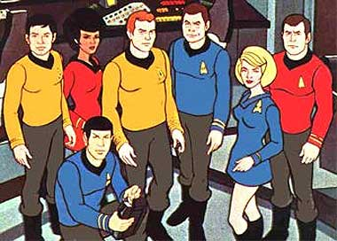
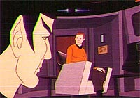
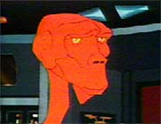
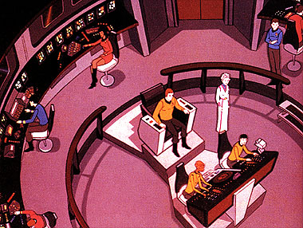
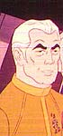
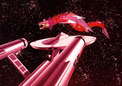
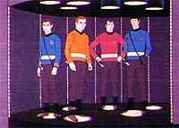
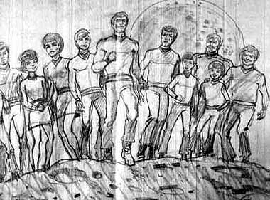
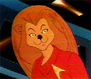

Por Fernando
Penteriche

Em 1972, trs anos aps
a Srie Clssica de Jornada ter sido cancelada, a
emissora de televiso NBC estava considerando lanar uma nova srie
do franchise, devido ao grande sucesso que a srie original estava
fazendo com suas reprises. Porm, de acordo com os clculos da
Paramount, seria necessrio desembolsar cerca de US$ 750 mil para
reconstruir os sets de filmagem, refazer os figurinos e o resto das
bugigangas (feisers, tricorders etc.).
Como os gastos de produo seriam proibitivos, acabou surgindo a
idia de criar uma verso econmica do seriado, no formato de
desenho animado. De todos os produtores de animao que
conversaram com Gene Roddenberry, Lou Scheimer e Norm Prescott, da
empresa Filmation Associates, foram os que finalmente o convenceram
para dar o pontap inicial no projeto.

A
razo que fez Roddenberry optar pela Filmation foi porque a empresa
foi a primeira que garantiu que poderia fazer uma srie animada
exatamente nos padres da Srie Clssica, sem a adio
de figuras caractersticas dos desenhos que eram exibidos nas manhs
de sbado nos EUA, como animais falantes bonitinhos ou crianas
espertinhas.
Roddenberry escolheu a sua antiga secretria e roteirista de
diversos episdios da Srie Clssica, Dorothy (D.C.)
Fontana, como produtora associada e editora de roteiros. Ela acabou
por trazer vrios escritores de episdios da srie original de
volta, incluindo David Gerrold ("The Trouble with Tribbles"),
Margaret Armen ("The Paradise Syndrome"), Samuel
Peeples ("Where No Mas Has Gone Before") e Stephen
Kandel (autor de "Mudd's Women" e "I, Mudd",
que acabou fazendo mais um episdio para o personagem na nova srie
animada: "Mudd's Passion").
As dificuldades de reunir o elenco original para as gravaes das
vozes na nova srie trouxeram alguns problemas tcnicos. O saudoso
DeForest Kelley reclamou na poca que como em muitos episdios os
atores gravavam suas participaes em diferentes datas e em
diferentes estdios, atrapalhava muito a interao entre os
personagens.
Do elenco original, todos estavam de volta, menos Walter Koenig (Chekov).
Mas mesmo sem seu personagem, Koenig contribuiu para a srie,
escrevendo um dos episdios, intitulado "The
Infinite Vulcan". Majel Barret (enfermeira Chapel) e James
Doohan (Scotty), alm de seus personagens, ainda dublaram diversos
aliengenas. O motivo para atores em mais de um papel e a ausncia
de Walter Koenig foi a falta de verba, pois para ter todos os atores
originais envolvidos nas dublagens, os desenhos tornaram-se a srie
de animao mais cara da poca. A falta de dinheiro pde ser
sentida tambm na animao propriamente dita. Enquanto desenhos
de 24 minutos ao estilo Disney requeriam mais de dezessete mil
desenhos individuais, a Filmation criou para cada episdio de Jornada
cerca de cinco a seis mil desenhos individuais. Rostos, poses e sequncias
de animao com membros da tripulao andando ou correndo foram
extensivamente
reutilizados episdio aps episdio para conter despesas,
resultando em cenas repetitivas e exaustivas de se assistir.

Atravs
de animao seria muito mais fcil incluir tripulantes aliengenas
bem esquisitos. Um exemplo o novo navegador da Enterprise,
tenente Arex, um humanide de trs braos e trs pernas dublado
por James Doohan.
A equipe de animao fez a ponte da Enterprise idntica da Srie
Clssica, exceto por ter mais um turboelevador, que nunca havia
aparecido antes. Os demais compartimentos da nave, como sala de
teletransporte e corredores, tambm seguiram fielmente o que foi
mostrado na srie original.
Tudo estava no lugar. Vozes corretas, cenrios fieis, a confivel
Enterprise em sua misso de cinco anos e mais algumas boas
surpresas. E em 8 de setembro de 1973, exatamente sete anos aps a
estria da srie original na TV americana, "Jornada nas
Estrelas - A Srie Animada" debutava na telinha, em um sbado
de manh, s 09h30, um horrio voltado exclusivamente para crianas.
Devido qualidade dos desenhos animados da poca, muitos crticos
louvaram a srie. O "Los Angeles Times" disse algo como
"a srie animada de Jornada nas Estrelas um Mercedes
em uma corrida com carrinhos de rolem". O "Washington
Post" achou "fascinante", porm se perguntava se os
roteiros no eram elevados demais para o pblico alvo, as crianas,
e a revista especializada em fico-cientfica "Cinefantastique"
deu a entender que via a srie como "um drama com interesses
humanos, justamente o que faz as sries com atores de carne-e-osso
serem to interessantes s vezes". A revista ainda disse que
as crianas achariam a srie "terrivelmente enfadonha".
Porm, embora a inteno de todos fosse a melhor possvel, a crtica
reconhecesse o bom trabalho, e o programa ainda tivesse ganho o Prmio
Emmy de melhor srie para crianas, essa verso de Jornada
acabou sendo a mais curta da histria do franchise, com apenas duas
temporadas (1973-1974) e 22 episdios.

Uma ponte entre as sries
A srie animada de Jornada foi uma verdadeira ponte entre a
srie original e os futuros filmes e sries do franchise. Muitos
elementos futuros foram introduzidos atravs dos desenhos. O
holodeck apareceu em "The Pratical Joker", o
primeiro tripulante nativo-americano (como Chakotay, de Voyager)
foi visto em "How Sharper Than a Serpent's Tooth",
o T de James T. Kirk foi revelado como sendo "Tiberius" em
"Bem".

A
ponte da Enterprise na Srie Clssica tinha apenas uma sada,
mas na srie de desenhos tinha duas, algo que foi utilizado a
partir do primeiro filme de cinema at hoje em dia nas pontes de
comando das naves da Federao.
Outro fato marcante foi no apenas a meno, como a participao
de Robert April em um episdio. April foi o primeiro capito da
Enteprise, antes mesmo de Cristopher Pike.
"Uma voz, muitas faces..."
Como voc j sabe, todos os personagens principais participaram da
Srie Animada, exceto Chekov. E alm dos principais, alguns
velhos conhecidos da srie original tambm deram as caras. So
eles: Sarek, Mudd, os Klingons Kor, Koloth e Korax, o chefe de
transporte Kyle, Amanda Grayson (me de Spock) e Robert Wesley ("The
Ultimate Computer").
A grande maioria foi dublada por James Doohan. David Gerrold (o
escritor de todos os episdios com os Tribbles) dublou o Klingon
Korax e Majel Barrett (enfermeira Chapel) dublou Amanda Grayson.
Mark Lenard voltou a ser Sarek (pelo menos na voz) e Harry Mudd foi
dublado pelo prprio ator que o interpretou na srie original,
Roger C. Carmel.
James Doohan trabalhou duro nesta srie. Dublou nada menos do que
57 personagens diferentes, incluindo o prprio Scotty e o
personagem semi-regular tenente Arex. Em dois episdios diferentes,
ele fez a voz de nada menos do que sete personagens! Foi em "Yesteryear"
e em "The Ambergris Element". Depois de Doohan, a
lista prossegue com Majel Barrett (17 personagens), Nichelle Nichols
(14 personagens), George Takei (7 personagens) e o escritor David
Gerrold (3 personagens). Quanta economia!!!
J que a animao permitia muitos personagens novos, por que no
preencher a Enterprise de veculos auxiliares para todas as ocasies?
Alm da nave auxiliar Galileo, havia tambm naves auxiliares para
todas as ocasies, incluindo uma aqutica ("Aquashuttle").
Vale ou no vale?
A Srie Animada cannica, ou seja, ela pode ser
considerada como parte de Jornada para efeitos de cronologia? Os
autores do livro Star Trek Cronology, Michael e Denise Okuda,
dizem que no. No livro, que sem dvida a melhor fonte de
informaes cronolgicas oficiais de Jornada, a srie de
desenhos no considerada, apenas com uma exceo, o episdio "Yesteryear".
Ele foi utilizado para determinar o ano de nascimento de Spock, j
que conta uma passagem da infncia do Vulcano. Okuda diz que, como
no havia mais nenhuma fonte de confiana, ele optou por utilizar
as informaes de "Yesteryear", tornando algumas
de suas referncias cannicas.
Na introduo de seu livro, Michael Okuda tenta explicar: "O
show considerado controverso no que diz respeito a ser
considerado oficial ou no para fins cronolgicos. Argumentos
convincentes existem de ambos os lados, especialmente se levarmos em
considerao que Gene Roddenberry e D.C. Fontana estavam
ativamente envolvidos no planejamento e na produo. Por outro
lado, algum tempo depois do final da srie, Gene acabou expressando
arrependimento sobre algumas coisas que aconteceram na srie
animada, e instruiu a Paramount a no considerar os episdios como
parte do universo oficial de Jornada nas Estrelas."
E os Okudas no incluram os desenhos em seu livro, excetuando-se "Yesteryear",
por falta de opo.
Quais seriam os fatores que levaram Gene a desconsiderar a Srie
Animada na cronologia de Jornada?
Curt Danhauser, um dos maiores conhecedores desta srie, tem uma
opinio:
"Eu acredito que trs episdios em particular foram os
responsveis pela srie animada ter sido considerada "no-cannica".
Um deles "The Slaver Weapon", um excelente episdio,
mas que conta com a participao de personagens de outro universo
que no de Jornada. um universo criado pelo escritor
deste episdio, Larry Niven, conhecido como "Larry Niven's
Known Universe". Roddenberry no gostou nada de ver raas e
tecnologias de outro autor entrando em sua obra.
"O outro episdio "The Terratian Incident",
outra boa histria, porm a idia de ter toda a tripulao
miniaturizada muito ridcula e no-cientfica para tornar esse
episdio "cannico".
"E por fim, "The Infinite Vulcan" apresentou
clones gigantes sem nenhuma explicao plausvel no episdio.
Estes estranhos conceitos dificilmente seriam aceitos em uma srie
com atores de carne e osso, e provvel que o desejo de Gene
Roddenberry fosse que Jornada nas Estrelas fosse lembrado
pelos produtores de Hollywood como um show srio, e no como um
desenho (s vezes) bobinho demais at para crianas.
"Mas na minha opinio, esse pensamento de Gene no deve
impedir que os fs abracem a Srie Animada, e desfrutem dos
episdios."
Se for por falta de qualidade, o que dizer do filme para cinema "Jornada
nas Estrelas V", do 1 ano da Nova Gerao, de Voyager
e principalmente do 3 ano da Srie Clssica? Nenhum
destes deve ser considerado cannico ento?

Roddenberry
se arrependeu dos roteiros que aprovou no passado, com clones
gigantes, estrelas pretas em espao branco e coisas do gnero. Mas
por mais que seja o criador de Jornada (e muitas pessoas o
ajudaram a fazer Jornada, a parcela de Gene no to
grande assim), ele tem o direito de renegar uma parte importante do
franchise? Afinal, muitos elementos sados dela perduram at hoje,
e inclusive existem episdios das novas sries que fazem menes
a muitos dos desenhos.
Vejamos um interessante exemplo: em um episdio do 7 ano de Deep
Space Nine, "Once More Unto the Breach", o
Klingon Kor mencionou ter servido a bordo de uma nave de batalha
Klingon de nome Klothos. Kor comandou a Klothos no episdio da Srie
Animada "The Time Trap". Temos tambm citaes a
fatos ocorridos nos desenhos em episdios como "Displaced"
de Voyager, "Tears of the Prophets" e "Change
of Heart", de Deep Space Nine. E claro, a tecnologia
do holodeck, j citada neste texto, que foi introduzida em um episdio
de 1974 da Srie Animada.
So fatos, e fatos so incontestveis. No meu pensamento a Srie
Animada deve ser considerada cannica, a despeito do que
Roddenberry queria.
Curiosidades
Para terminar, aqui esto algumas curiosidades da Srie Animada.
Infelizmente no h previso de to cedo vermos esse pedao da
histria de Jornada em nossa TV. Nem nos Estados Unidos a srie
est sendo exibida. Hoje em dia, a nica forma de assistirmos aos
desenhos atravs de fitas que a Paramount lanou, ou atravs
de laserdiscs...
Quem tiver a oportunidade, no deixe passar em branco, pois valer
a pena, nem que seja para relembrar a poca em que tudo o que
existia da saga de Jornada nas Estrelas eram os 79 episdios
"live-action" e seus 22 filhotes animados.
Voc sabia que:

Quando
os tripulantes da Enterprise desciam em um planeta que no suporta
vida humana, muitas vezes eram utilizados "cintos de suporte de
vida". O motivo desse novo aparato era que, devido falta de
verba, ao invs de se fazer um novo desenho com Kirk e cia. andando
com roupas especiais, era mais fcil reutilizar sequncias de episdios
anteriores, e adicionar celula um
pequeno desenho de um cinto.
As insgnas dos uniformes eram maiores do que as dos uniformes da srie
original, pois ficava mais fcil para os desenhistas trabalharem.
No episdio "The Survivor", McCoy refere-se sua
filha, Joanna. Na srie original, existia um roteiro escrito por
D.C. Fontana para um episdio chamado "Joanna". O
roteiro, claro, nunca foi filmado. Joanna apareceria como uma hippie
espacial. A histria acabaria sendo adaptada para formar o episdio
"The Way to Eden".
As seguintes raas aliengenas foram vistas na Srie Animada:
Klingons - "More Tribbles, More Troubles", "The
Time Trap"
Romulanos - "The Survivor", "The Practical Joker"
Phylosianos - "The Infinite Vulcan"
Kzinti - "The Slaver Weapon"
Orions - "The Pirates of Orion"
Dramans - "Albatross"
Kukulkan - "How Sharper Than a Serpent's Tooth"
Arretians - "The Counter-Clock Incident"
Chegou a ser cogitada uma verso mais infantil para a srie, mas no
foi aceita. Alguns esboos foram feitos, como este abaixo:

Por volta de 1990, a Paramount tentou vender a idia de uma srie
animada com os personagens da Nova Gerao, mas nenhuma
emissora se interessou. Foram at feitas algumas clulas para a
animao, e quem chegou a ver disse que os desenhos tinham muito
boa qualidade. Perguntado sobre a possibilidade de um dia termos
desenhos da Nova Gerao, Rick Berman disse que no, pois
"diluiria o franchise".

Alm
do tenente Arex, foi criado outro personagem bem diferente para
fazer parte da tripulao da Enterprise. Era a tambm tenente M'Ress,
uma "felinide". Em "Jornada nas Estrelas
IV", na cena do julgamento de Kirk, podemos ver alguns
seres "felinides". Eles so da mesma raa que M'Ress,
segundo o pessoal da maquiagem de Jornada IV, e foram criados
como uma homenagem Srie Animada.
Apenas trs atores convidados da Srie Clssica repetiram
suas interpretaes na Srie Animada: Mark Lenard, como a voz de
Sarek em "Yesteryear", Roger C. Carmel, como a voz
de Harry Mudd em "Mudd's Passion" e Stanley Adams,
como a voz de Cyrano Jones em "More Tribbles, More Troubles".
O episdio "Beyond the Farthest Star" no pde
ser exibido em Los Angeles no dia da estria da srie, em 8 de
setembro de 73, pois como George Takei estava fazendo campanha
eleitoral no Estado da Califrnia, nem sua imagem e nem sua voz
poderiam aparecer na televiso durante este perodo naquele
Estado.
Os seguintes episdios abaixo so derivados da srie original:
- "Once Upon a Planet", sequncia de "Shore
Leave";
- "Yesteryear", derivado de "The City on
the Edge of Forever". Tambm pode ser relacionado ao episdio
"Journey of Babel";
- "Mudd's Passion", sequncia de "I, Mudd";
- "More Tribbles, More Troubles", derivado de "The
Trouble With Tribbles".
Na numerao de produo da Paramount, a Srie Animada
tem 23 episdios, e o n 12 est faltando, sendo compensado ao
final, pois so apenas 22 episdios. No h registro de nenhum
episdio "secreto" perdido por a...